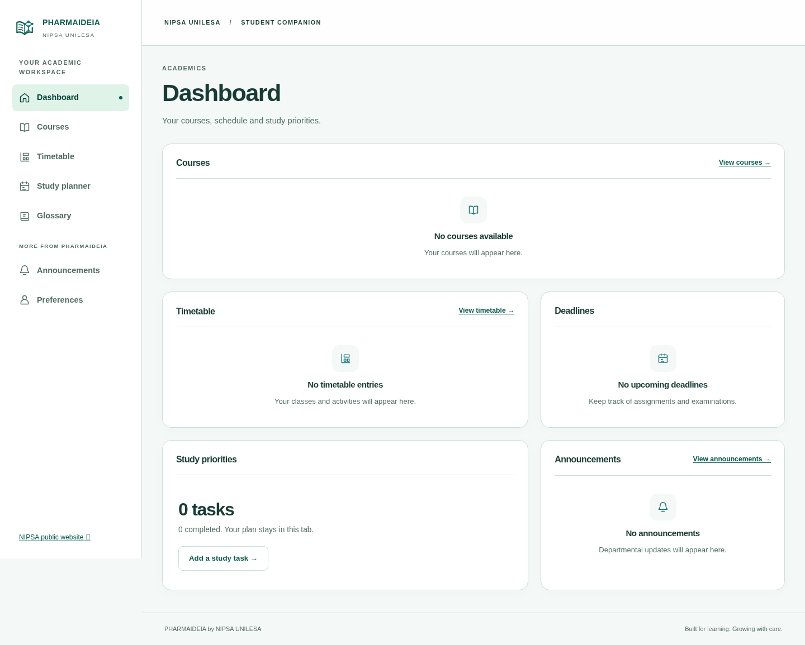
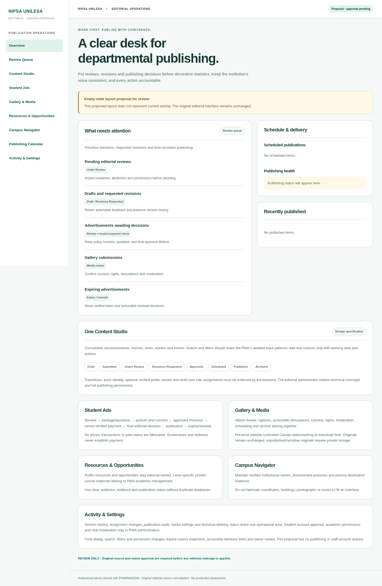

PHARMAIDEIA / NIPSA UNILESA · M3 REVIEW
No owned source or current screenshot was supplied. A faithful “before” interface cannot be shown or evaluated. This panel deliberately does not fabricate one. The original ChatGPT Sites prototype remains untouched.
Retain institutional colours, typography, labelled navigation, card spacing and restrained surfaces. This is the student app, not the existing editorial portal.

Prioritise actionable work streams, a consolidated Content Studio, schedule/delivery and explicit disconnected states. No activity counts or publishing actions are invented.

Retain: planned publishing lifecycle, verified attribution, multiple users per role, administrator technical and publishing scope, existing gallery download-time watermarking.
Improve in the proposal: task priority, responsive section navigation, review-state clarity and separation from PWA account administration.
Avoid in the proposal: decorative fake counters, duplicate management destinations and browser-only permissions. No actual existing component is marked for removal without source inspection.